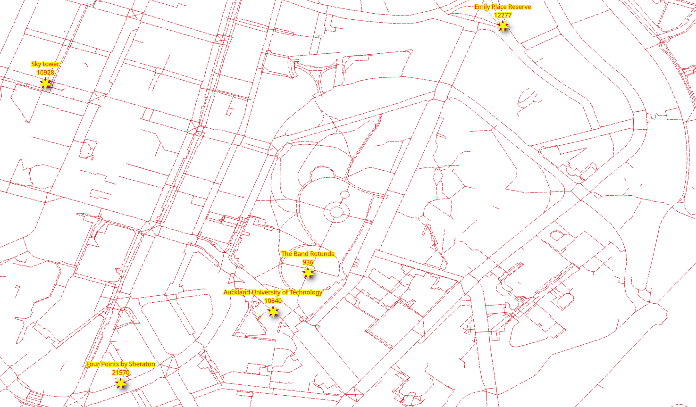

2. Graphs¶

Different application require different graphs. This chapter covers how to discard disconnected segments and different approaches to create graphs.
pgRouting functions in this chapter
2.1. The graph requirements¶
In this chapter there are three graph requirements. It consists on three graphs
based on a fully connected graph derived from ways: two for different types
of vehicles and one for pedestrian, the source and the target in all of them are
based on the source and target.
The description of the graphs:
Particular vehicle:
Circulate on the whole Auckland area.
Do not use pedestrian, steps, footway, path, cycleway
Speed is the default speed from OSM information.
Taxi vehicle:
Circulate on a smaller area:
Bounding box:
(174.775,-36.855,174.76,-36.84)Do not use pedestrian, steps, footway, path, cycleway
Speed is 10% slower than that of the particular vehicles.
Pedestrians:
Walk on the whole Auckland area.
Can only use pedestrian only ways:
pedestrian, steps, footway, path, cycleway
The walking speed is
2 mts/sec.
2.2. Configuration from osm2pgrouting¶
When dealing with data, being aware of what kind of data is being used can improve results.
Vehicles can not circulate on pedestrian ways

Penalizing or removal of pedestrian ways will make the results closer to reality.
When converting data from OSM format using the osm2pgrouting tool, there is an
additional table: configuration.
The configuration table structure can be obtained with the following command.
\dS+ configuration
Table "public.configuration"
Column | Type | Collation | Nullable | Default | Storage | Compression | Stats target | Description
-------------------+------------------+-----------+----------+-------------------------------------------+----------+-------------+--------------+-------------
id | integer | | not null | nextval('configuration_id_seq'::regclass) | plain | | |
tag_id | integer | | | | plain | | |
tag_key | text | | | | extended | | |
tag_value | text | | | | extended | | |
priority | double precision | | | | plain | | |
maxspeed | double precision | | | | plain | | |
maxspeed_forward | double precision | | | | plain | | |
maxspeed_backward | double precision | | | | plain | | |
force | character(1) | | | | extended | | |
Indexes:
"configuration_pkey" PRIMARY KEY, btree (id)
"configuration_tag_id_key" UNIQUE CONSTRAINT, btree (tag_id)
Referenced by:
TABLE "ways" CONSTRAINT "ways_tag_id_fkey" FOREIGN KEY (tag_id) REFERENCES configuration(tag_id)
Access method: heap
Options: autovacuum_enabled=false

In the image above there is a detail of the tag_id of the roads.
The OSM highway types:
SELECT tag_id, tag_key, tag_value
FROM configuration
ORDER BY tag_id;
tag_id | tag_key | tag_value
--------+-----------+-------------------
100 | highway | road
101 | highway | motorway
102 | highway | motorway_link
103 | highway | motorway_junction
104 | highway | trunk
105 | highway | trunk_link
106 | highway | primary
107 | highway | primary_link
108 | highway | secondary
109 | highway | tertiary
110 | highway | residential
111 | highway | living_street
112 | highway | service
113 | highway | track
114 | highway | pedestrian
115 | highway | services
116 | highway | bus_guideway
117 | highway | path
118 | highway | cycleway
119 | highway | footway
120 | highway | bridleway
121 | highway | byway
122 | highway | steps
123 | highway | unclassified
124 | highway | secondary_link
125 | highway | tertiary_link
201 | cycleway | lane
202 | cycleway | track
203 | cycleway | opposite_lane
204 | cycleway | opposite
301 | tracktype | grade1
302 | tracktype | grade2
303 | tracktype | grade3
304 | tracktype | grade4
305 | tracktype | grade5
401 | junction | roundabout
(36 rows)
Also, on the ways table there is a column that can be used to JOIN with the configuration table.
The configuration types in the Auckland data
SELECT distinct tag_id, tag_key, tag_value
FROM ways JOIN configuration USING (tag_id)
ORDER BY tag_id;
tag_id | tag_key | tag_value
--------+----------+----------------
101 | highway | motorway
102 | highway | motorway_link
104 | highway | trunk
105 | highway | trunk_link
106 | highway | primary
107 | highway | primary_link
108 | highway | secondary
109 | highway | tertiary
110 | highway | residential
111 | highway | living_street
112 | highway | service
113 | highway | track
114 | highway | pedestrian
115 | highway | services
117 | highway | path
118 | highway | cycleway
119 | highway | footway
122 | highway | steps
123 | highway | unclassified
124 | highway | secondary_link
125 | highway | tertiary_link
201 | cycleway | lane
202 | cycleway | track
(23 rows)
2.3. pgr_extractVertices¶
pgr_extractVertices extracting the vertex information of the set of edges of
a graph.
Signature summary
pgr_extractVertices(Edges SQL, [dryrun])
RETURNS SETOF (id, in_edges, out_edges, x, y, geom)
OR EMPTY SET
Description of the function can be found in pgr_extractVertices
2.3.1. Exercise 1: Create a vertices table¶
Problem
Create the vertices table corresponding to the edges in ways.
Solution
A graph consists of a set of vertices and a set of edges.
In this case, the
waystable is a set of edges.In order to make use of all the graph functions from pgRouting, it is required have the set of vertices defined.
From the requirements, a fully connected graph is needed, therefore adding a
componentcolumn.
SELECT id, in_edges, out_edges, x, y, NULL::BIGINT osm_id, NULL::BIGINT component, geom
INTO vertices
FROM pgr_extractVertices(
'SELECT gid AS id, source, target
FROM ways ORDER BY id');
SELECT 25692
Reviewing the description of the vertices table
\dS+ vertices
Table "public.vertices"
Column | Type | Collation | Nullable | Default | Storage | Compression | Stats target | Description
-----------+------------------+-----------+----------+---------+----------+-------------+--------------+-------------
id | bigint | | | | plain | | |
in_edges | bigint[] | | | | extended | | |
out_edges | bigint[] | | | | extended | | |
x | double precision | | | | plain | | |
y | double precision | | | | plain | | |
osm_id | bigint | | | | plain | | |
component | bigint | | | | plain | | |
geom | geometry | | | | main | | |
Access method: heap
Inspecting the information on the vertices table
SELECT * FROM vertices Limit 10;
id | in_edges | out_edges | x | y | osm_id | component | geom
-------+---------------+-------------+---+---+--------+-----------+------
1269 | {1611} | {604} | | | | |
4790 | {5404,15924} | {110,28086} | | | | |
6396 | {7059} | {384,7058} | | | | |
8336 | {9210} | {429} | | | | |
51 | {69,70} | {71,10294} | | | | |
13527 | {14259,19725} | {936,30377} | | | | |
758 | {1008} | {718,6787} | | | | |
13520 | {14252,17115} | {921,30368} | | | | |
4326 | {4925,15893} | {466,30909} | | | | |
5337 | {5970} | {193} | | | | |
(10 rows)
2.3.2. Exercise 2: Fill up other columns in the vertices table¶
Problem
Fill up geometry information on the vertices table.
Solution
Count the number of rows that need to be filled up.
SELECT count(*) FROM vertices WHERE geom IS NULL;
count
-------
25692
(1 row)
Update the geom and osm_id columns
The update based on the
sourcecolumn fromwaystable and theidcolumn of the vertices table.To update
geomcolumn, use the start point of the geometry on thewaystable.Use the
source_osmvalue to fill uposm_idcolumn.
UPDATE vertices SET (geom, osm_id) = (ST_startPoint(the_geom), source_osm)
FROM ways WHERE source = id;
Verification
UPDATE 23843
Not expecting to be done due to the fact that some vertices are dead ends.
SELECT count(*) FROM vertices WHERE geom IS NULL;
count
-------
1849
(1 row)
Continue update the geom and osm_id columns
The update based on the
targetcolumn fromwaystable and theidcolumn of the vertices table.To update
geomcolumn, use the end point of the geometry on thewaystable.Use the
target_osmvalue to fill uposm_idcolumn.
UPDATE vertices SET (geom, osm_id) = (ST_endPoint(the_geom), target_osm)
FROM ways WHERE geom IS NULL AND target = id;
Verification
UPDATE 1849
Expecting to be done, that is the geometry column should not have a NULL
value.
SELECT count(*) FROM vertices WHERE geom IS NULL;
count
-------
0
(1 row)
Update the x and y columns
Update the x and y columns based on the geom column.
UPDATE vertices set (x,y) = (ST_X(geom), ST_Y(geom));
Verification
UPDATE 25692
2.4. pgr_connectedComponents¶
pgr_connectedComponents compute the connected components of an undirected
graph using a Depth First Search approach. A connected component of an
undirected graph is a set of vertices that are all reachable from each other.
Signature summary
pgr_connectedComponents(edges_sql)
RETURNS SET OF (seq, component, node)
OR EMPTY SET
Description of the function can be found in pgr_connectedComponents
2.4.1. Exercise 3: Set components on edges and vertices tables¶
Problem
Get the information about the graph components.
Solution
Create additional columns on the edges tables.
ALTER TABLE ways ADD COLUMN component BIGINT;
ALTER TABLE
Use the pgr_connectedComponents to fill up the vertices table.
Use the results to store the component numbers on the vertices table.
UPDATE vertices AS v SET component = c.component
FROM (
SELECT seq, component, node
FROM pgr_connectedComponents(
'SELECT gid as id, source, target, cost, reverse_cost FROM ways'
)) AS c
WHERE v.id = c.node;
UPDATE 25692
Update the edges table with based on the component number of the vertex
UPDATE ways SET component = v.component
FROM (SELECT id, component FROM vertices) AS v
WHERE source = v.id;
UPDATE 34278
2.4.2. Exercise 4: Inspect the components¶
Problem
Answer the following questions:
How many components are in the vertices table?
How many components are in the edges table?
List the 10 components with more edges.
Get the component with the maximum number of edges.
Solution
1. How many components are in the vertices table?
Count the distinct components.
SELECT count(DISTINCT component) FROM vertices;
count
-------
327
(1 row)
2. How many components are in the edges table?
Count the distinct components.
SELECT count(DISTINCT component) FROM ways;
count
-------
327
(1 row)
3. List the 10 components with more edges.
Count number of rows grouped by component. (line 1)
Inverse order to display the top 10. (line 2)
SELECT component, count(*) FROM ways GROUP BY component
ORDER BY count DESC LIMIT 10;
component | count
-----------+-------
1 | 33088
870 | 468
866 | 56
18805 | 40
21000 | 28
2165 | 21
4627 | 17
9323 | 17
15304 | 16
15962 | 15
(10 rows)
4. Get the component with the maximum number of edges.
Use the query from last question to get the maximum count
Get the component that matches the maximum value.
WITH
all_components AS (SELECT component, count(*) FROM ways GROUP BY component),
max_component AS (SELECT max(count) from all_components)
SELECT component FROM all_components WHERE count = (SELECT max FROM max_component);
component
-----------
1
(1 row)
2.5. Preparing the graphs¶
2.5.1. Exercise 5: Creating a view for routing¶

Problem
Create a view with minimal amount of information for processing the particular vehicles.
Routing cost and reverse_cost in terms of seconds for routing calculations.
Exclude steps, footway, path, cycleway segments.
Data needed in the view for further processing.
nameThe name of the segment.length_mThe length in meters rename tolength.the_geomThe geometry rename togeom.tag_idKeep as is.
Verify the number of edges was reduced.
Solution
Creating the view:
If you need to reconstruct the view, first drop it using the command on line 1.
Get the component with maximum number of edges (lines 6-10)
The source and target requirements for the function are to be with OSM identifiers. (line 14)
The
costandreverse_costare in terms of seconds. (line 15)The additional parameters
length_mandthe_geomare renamed,nameis also included. (line 16)JOINwith the configuration:Exclude steps, footway, path, cycleway. (line 18)
1-- DROP VIEW vehicle_net CASCADE;
2
3CREATE OR REPLACE VIEW vehicle_net AS
4
5WITH
6all_components AS (SELECT component, count(*) FROM ways GROUP BY component), -- line 6
7max_component AS (SELECT max(count) from all_components),
8the_component AS (
9 SELECT component FROM all_components
10 WHERE count = (SELECT max FROM max_component))
11
12SELECT
13 gid AS id,
14 source, target,
15 cost_s AS cost, reverse_cost_s AS reverse_cost,
16 name, length_m AS length, tag_id, the_geom AS geom
17FROM ways JOIN the_component USING (component) JOIN configuration USING (tag_id)
18WHERE tag_value NOT IN ('pedestrian', 'steps','footway','path','cycleway'); -- line 18
CREATE VIEW
Verification
Count the rows on the original ways and on vehicle_net.
SELECT count(*) FROM ways;
SELECT count(*) FROM vehicle_net;
count
-------
34278
(1 row)
count
-------
12984
(1 row)
Get the description of the view
\dS+ vehicle_net
View "public.vehicle_net"
Column | Type | Collation | Nullable | Default | Storage | Description
--------------+---------------------------+-----------+----------+---------+----------+-------------
id | bigint | | | | plain |
source | bigint | | | | plain |
target | bigint | | | | plain |
cost | double precision | | | | plain |
reverse_cost | double precision | | | | plain |
name | text | | | | extended |
length | double precision | | | | plain |
tag_id | integer | | | | plain |
geom | geometry(LineString,4326) | | | | main |
View definition:
WITH all_components AS (
SELECT ways_1.component,
count(*) AS count
FROM ways ways_1
GROUP BY ways_1.component
), max_component AS (
SELECT max(all_components.count) AS max
FROM all_components
), the_component AS (
SELECT all_components.component
FROM all_components
WHERE all_components.count = (( SELECT max_component.max
FROM max_component))
)
SELECT ways.gid AS id,
ways.source,
ways.target,
ways.cost_s AS cost,
ways.reverse_cost_s AS reverse_cost,
ways.name,
ways.length_m AS length,
ways.tag_id,
ways.the_geom AS geom
FROM ways
JOIN the_component USING (component)
JOIN configuration USING (tag_id)
WHERE configuration.tag_value <> ALL (ARRAY['pedestrian'::text, 'steps'::text, 'footway'::text, 'path'::text, 'cycleway'::text]);
2.5.2. Exercise 6: Limiting the road network within an area¶
Problem
Create a view
taxi_netfor the taxi:The taxi can only circulate inside this Bounding Box:
(174.775,-36.855,174.76,-36.84)The taxi speed is 10% slower than the particular vehicle.
Verify the reduced number of road segments.
Solution
Creating the view:
Adjust the taxi’s
costandreverse_costto be 10% slower than of the particular vehicle. (line 7)The graph for the taxi is a subset of the
vehicle_netgraph. (line 9)Can only circulate inside the bounding box:
(174.775,-36.855,174.76,-36.84). (line 10)
-- DROP VIEW taxi_net;
CREATE OR REPLACE VIEW taxi_net AS
SELECT
id,
source, target,
cost * 1.10 AS cost, reverse_cost * 1.10 AS reverse_cost,
name, length, tag_id, geom
FROM vehicle_net
WHERE vehicle_net.geom && ST_MakeEnvelope(174.775,-36.855,174.76,-36.84);
CREATE VIEW
Count the rows on taxi_net.
SELECT count(*) FROM taxi_net;
count
-------
2647
(1 row)
Get the description.
\dS+ taxi_net
View "public.taxi_net"
Column | Type | Collation | Nullable | Default | Storage | Description
--------------+---------------------------+-----------+----------+---------+----------+-------------
id | bigint | | | | plain |
source | bigint | | | | plain |
target | bigint | | | | plain |
cost | double precision | | | | plain |
reverse_cost | double precision | | | | plain |
name | text | | | | extended |
length | double precision | | | | plain |
tag_id | integer | | | | plain |
geom | geometry(LineString,4326) | | | | main |
View definition:
SELECT id,
source,
target,
cost * 1.10::double precision AS cost,
reverse_cost * 1.10::double precision AS reverse_cost,
name,
length,
tag_id,
geom
FROM vehicle_net
WHERE geom && st_makeenvelope(174.775::double precision, '-36.855'::numeric::double precision, 174.76::double precision, '-36.84'::numeric::double precision);
2.5.3. Exercise 7: Creating a materialized view for routing pedestrians¶
{kind=link}
Problem
Create a materialized view with minimal amount of information for processing pedestrians.
Routing cost and reverse_cost will be on seconds for routing calculations.
The speed is
2 mts/sec.
Only include the pedestrian only roads:
pedestrian,steps,footway,path,cyclewayData needed in the view for further processing.
length_mThe length in meters.the_geomThe geometry.
Verify the number of edges was reduced.
Solution
Creating the view:
Similar to Exercise 5: Creating a view for routing:
The
costandreverse_costare in terms of seconds with speed of2 mts/sec. (line 7)Exclude
motorway,primaryandsecondary. (line 11)
-- DROP MATERIALIZED VIEW walk_net CASCADE;
CREATE MATERIALIZED VIEW walk_net AS
WITH
allc AS (SELECT component, count(*) FROM ways GROUP BY component),
maxcount AS (SELECT max(count) from allc),
the_component AS (SELECT component FROM allc WHERE count = (SELECT max FROM maxcount))
SELECT
gid AS id,
source, target,
length_m / 2.0 AS cost, length_m / 2.0 AS reverse_cost,
name, length_m AS length, the_geom AS geom
FROM ways JOIN the_component USING (component) JOIN configuration USING (tag_id)
WHERE tag_value IN ('pedestrian', 'steps','footway','path','cycleway'); -- line 18
SELECT 20104
Count the rows on the view walk_net.
SELECT count(*) FROM walk_net;
count
-------
20104
(1 row)
Get the description.
\dS+ walk_net
Materialized view "public.walk_net"
Column | Type | Collation | Nullable | Default | Storage | Compression | Stats target | Description
--------------+---------------------------+-----------+----------+---------+----------+-------------+--------------+-------------
id | bigint | | | | plain | | |
source | bigint | | | | plain | | |
target | bigint | | | | plain | | |
cost | double precision | | | | plain | | |
reverse_cost | double precision | | | | plain | | |
name | text | | | | extended | | |
length | double precision | | | | plain | | |
geom | geometry(LineString,4326) | | | | main | | |
View definition:
WITH allc AS (
SELECT ways_1.component,
count(*) AS count
FROM ways ways_1
GROUP BY ways_1.component
), maxcount AS (
SELECT max(allc.count) AS max
FROM allc
), the_component AS (
SELECT allc.component
FROM allc
WHERE allc.count = (( SELECT maxcount.max
FROM maxcount))
)
SELECT ways.gid AS id,
ways.source,
ways.target,
ways.length_m / 2.0::double precision AS cost,
ways.length_m / 2.0::double precision AS reverse_cost,
ways.name,
ways.length_m AS length,
ways.the_geom AS geom
FROM ways
JOIN the_component USING (component)
JOIN configuration USING (tag_id)
WHERE configuration.tag_value = ANY (ARRAY['pedestrian'::text, 'steps'::text, 'footway'::text, 'path'::text, 'cycleway'::text]);
Access method: heap
2.6. pgr_dijkstraCostMatrix¶
pgr_dijkstraCostMatrix Calculates a cost matrix using Dijkstra algorithm.
Signature summary
pgr_dijkstraCostMatrix(Edges SQL, start vids, [directed])
RETURNS SETOF (start_vid, end_vid, agg_cost)
OR EMPTY SET
Description of the function can be found in pgr_dijkstraCostMatrix
2.6.1. Exercise 8: Testing the views¶

Problem
Test the created views
In particular:
Get a traveling cost matrix in seconds from all locations to all locations.
the views to be tested are:
vehicle_nettaxi_netwalk_net
Solution
The locations are:
10840,936,21570,10928and12777.Passed as an array to the function.
For vehicle_net:
vehicle_netis used.Selection of the columns with the corresponding names are on line 1.
The view is prepared with the column names that pgRouting use.
There is no need to rename columns. (line 3)
The OSM identifiers of the departure and destination are used. (line 4)
1SELECT start_vid, end_vid, agg_cost
2FROM pgr_dijkstraCostMatrix(
3 'SELECT * FROM vehicle_net',
4 ARRAY[10840, 936, 21570, 10928, 12777]);
start_vid | end_vid | agg_cost
-----------+---------+--------------------
10840 | 10928 | 92.62169923516363
10840 | 12777 | 131.97395454563156
10840 | 21570 | 48.0208391902059
10928 | 10840 | 150.3076263447858
10928 | 12777 | 135.12540835351246
10928 | 21570 | 98.47283483371632
12777 | 10840 | 139.79811678810356
12777 | 10928 | 110.69672228339044
12777 | 21570 | 155.38263515775233
21570 | 10840 | 80.99982055010783
21570 | 10928 | 107.12136717821703
21570 | 12777 | 157.0795377408708
(12 rows)
For taxi_net:
Similar as the previous one but with
taxi_net. (line 3)The results give the same route as with
vehicle_netbutcostis higher.
SELECT start_vid, end_vid, agg_cost
FROM pgr_dijkstraCostMatrix(
'SELECT * FROM taxi_net',
ARRAY[10840, 936, 21570, 10928, 12777]);
start_vid | end_vid | agg_cost
-----------+---------+--------------------
10840 | 10928 | 101.88386915868001
10840 | 12777 | 145.17135000019474
10840 | 21570 | 52.822923109226494
10928 | 10840 | 165.33838897926447
10928 | 12777 | 148.6379491888637
10928 | 21570 | 108.32011831708796
12777 | 10840 | 153.77792846691395
12777 | 10928 | 121.76639451172952
12777 | 21570 | 170.92089867352766
21570 | 10840 | 89.0998026051186
21570 | 10928 | 117.83350389603875
21570 | 12777 | 172.78749151495796
(12 rows)
For walk_net:
Similar as the previous one but with
walk_net. (line 3)The results give a different route than of the vehicles.
SELECT start_vid, end_vid, agg_cost FROM pgr_dijkstraCostMatrix( 'SELECT * FROM walk_net', ARRAY[10840, 936, 21570, 10928, 12777]);
start_vid | end_vid | agg_cost
-----------+---------+--------------------
936 | 10840 | 103.6184909456129
936 | 10928 | 358.8563418735532
936 | 12777 | 352.5086163914612
936 | 21570 | 250.65059710078583
10840 | 936 | 103.6184909456129
10840 | 10928 | 383.0827019759325
10840 | 12777 | 423.0334523034633
10840 | 21570 | 192.28099914894182
10928 | 936 | 358.8563418735532
10928 | 10840 | 383.0827019759326
10928 | 12777 | 464.75653800007507
10928 | 21570 | 414.39918676018954
12777 | 936 | 352.5086163914611
12777 | 10840 | 423.03345230346326
12777 | 10928 | 464.75653800007495
12777 | 21570 | 563.5749907754648
21570 | 936 | 250.6505971007858
21570 | 10840 | 192.28099914894173
21570 | 10928 | 414.39918676018937
21570 | 12777 | 563.574990775465
(20 rows)